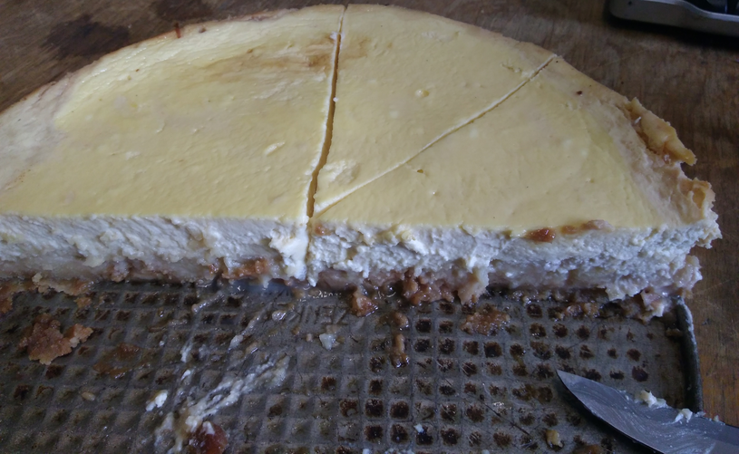

This time the input was fairly randomly organised. Each set of data was on a random number of lines but separated from the next one by an empty line, and each set was composed of values in the form key:value and separated from the others by a space. I'm pretty sure it could have been entirely sparsed by regex but I was feeling lazyhaving woken up way earlier than usual, so I used instead the standard tools (scan, readLines, strsplit) to create a list of named vectors. Named vectors are frankly rarely used nowadays in R but, maybe it is because I have been programming a lot in python in the last few years, I like to use them as they are R equivalent to python's dictionaries.
input <- readLines("input04.txt")
input[input==""]<-"\n" #First, replace the blank lines separating entries with a newline symbol
passports <- gsub("^ | $","",scan(text=paste(input,collapse=" "),what="",sep="\n")) #collapse all together so that the only newlines are the one separating entries, and reads it in again (plus clean the trailing whitespaces).
pass <- list() #Yes, I know, a loop, yawn.
for(i in seq_along(passports)){
step <- do.call(rbind,strsplit(scan(text=passports[i],what="",sep=" "),":")) #Separate by spaces, then by colons
pass[[i]]<-step[,2] #keep the value
names(pass[[i]])<-step[,1] #and use the key as name
}Once this is done, figuring out the rest of the challenge was fairly trivial. The first part for instance was a one-liner:
#Count the number of passports having all the required fields:
sum(sapply(pass,function(x)all(c("byr","iyr","eyr","hgt","hcl","ecl","pid")%in%names(x))))In culinary news, I made a quince pie the other day, "american-style". It wasn't that much of a success, so instead here's a recipe for my best quince-based dessert: my quince cheesecake. I have several variations on that theme but here is the one I made in October 2019 for our student's birthday.
For the crunchy base: broken down biscuits, with butter and a bit of sugar (the biscuits are usually too sweet to begin with), as usual. Then a layer of quince compote (i. e. quinces cooked in a water and a tiny bit of sugar until they are mashed), and then the 'cheese' matrix: 4 eggs, a pot of crême fraîche, some mascarpone and some Rahmjoghurt (in France I would have used Faisselles and/or Petits-Suisses), with sugar (including vanillin sugar). Cooked 45min at around 180°.
What remained after my working group ate the cake. It's a great frustration of mine to have a lab big enough to make cooking a cake worthwhile but so small that I still have tons of leftovers :)